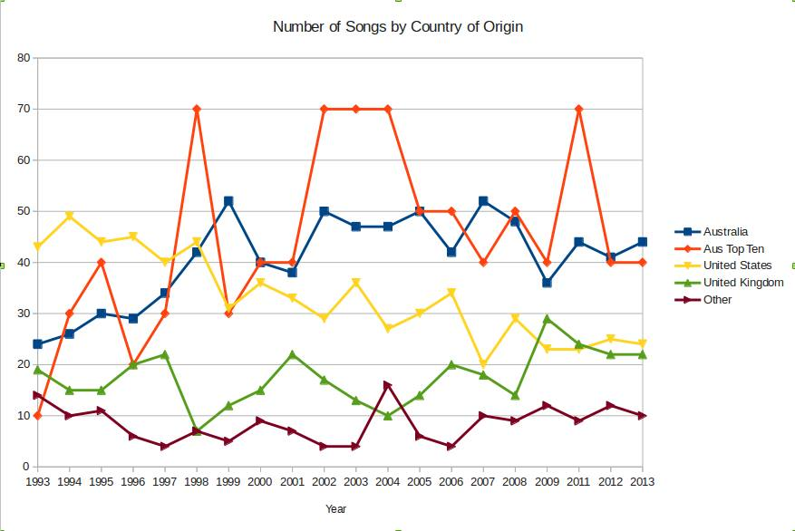

Country of Origin
Okay, Kristi asked some interesting questions, about whether an Australian artist was more likely to have multiple entries than a foreign artist. This turned out to be pretty hard to answer, because the artist data is a bit shit. The problem is that lots of artists are recorded as blah & bleh for a collaboration, which is for a computer looks the same as “Mark Ronson and the Business Intl” for example. Similar problem with feats, So answering that probably require manually sorting through a bunch of cases. Whinge whinge whinge, maybe another time.
Instead I did the much easier thing of plotting the country of origins over time. You can see two interesting trends. One is a general increase of Australian songs making the list each year, mostly at the expense of US songs. Secondly, the number of Australian songs in the top ten (The orange line, rescaled) is usually higher than the general proportion of aussie songs overall. In other words, Australian songs are punching above their weight.
Some other facts that I didn’t include because it made the graph unreadable. Canada, New Zealand and Sweden have comparable representation, averaging 1.55, 1.3 and 0.95 songs per year respectively.
A thing to note. Some of the collaborations are international. In such cases, I took the primary country (ie the one listed first). This probably hurt NZ disproportionally, as I would guess they are most likely to collaborate with a better know Australian. A better system would give an equal share of the song to each country. Again, a task for another day.
